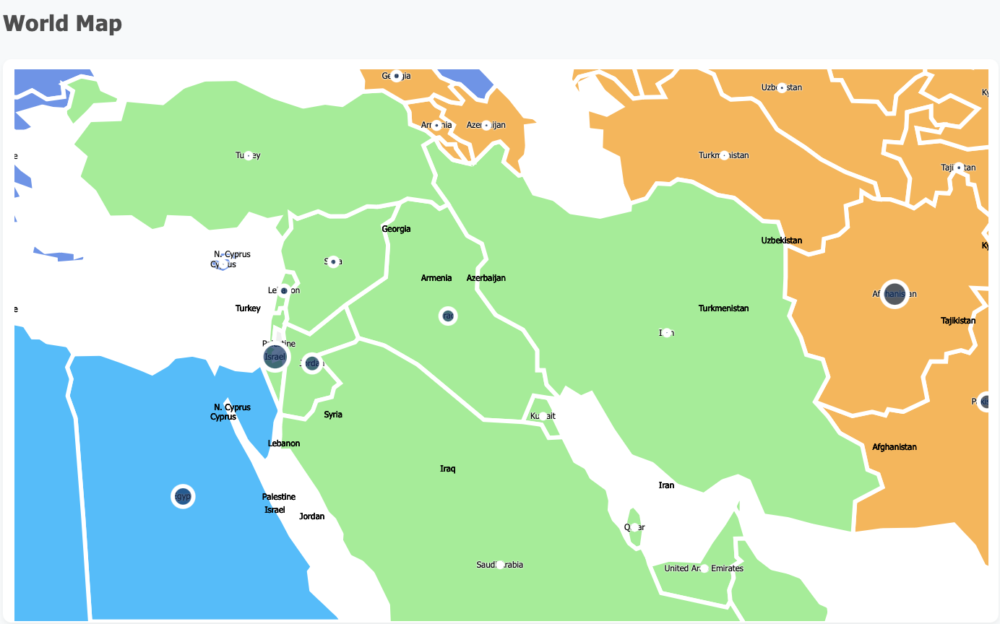
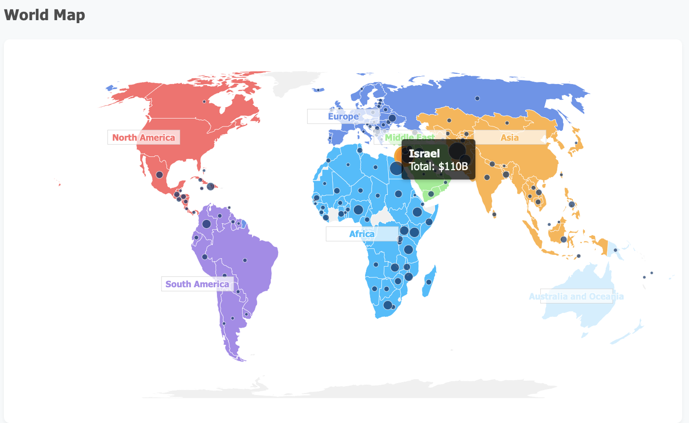
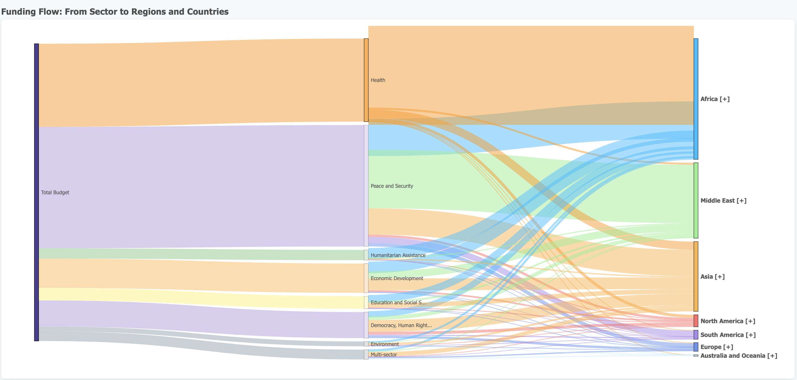
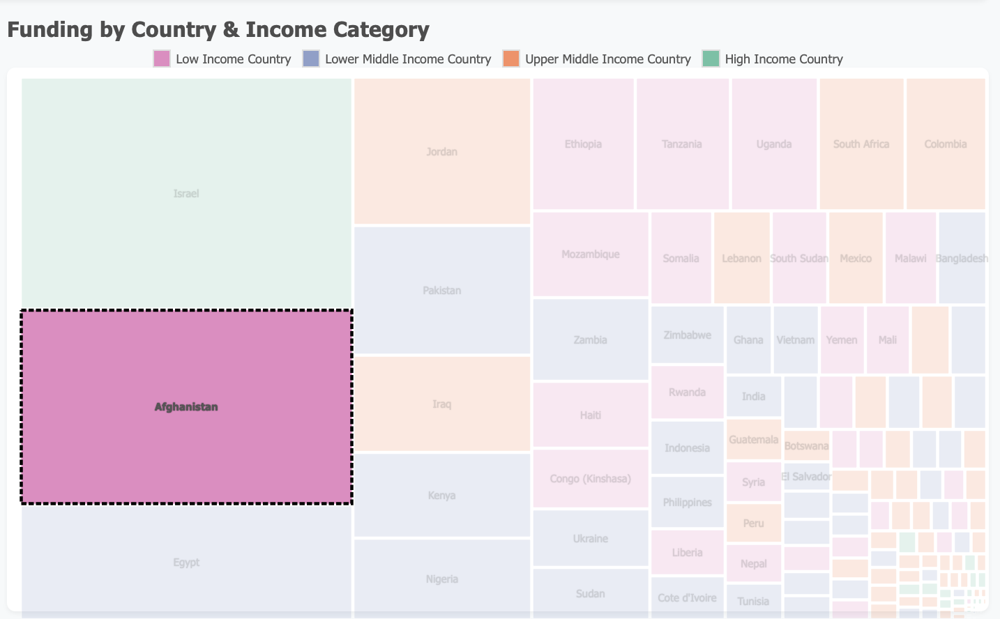
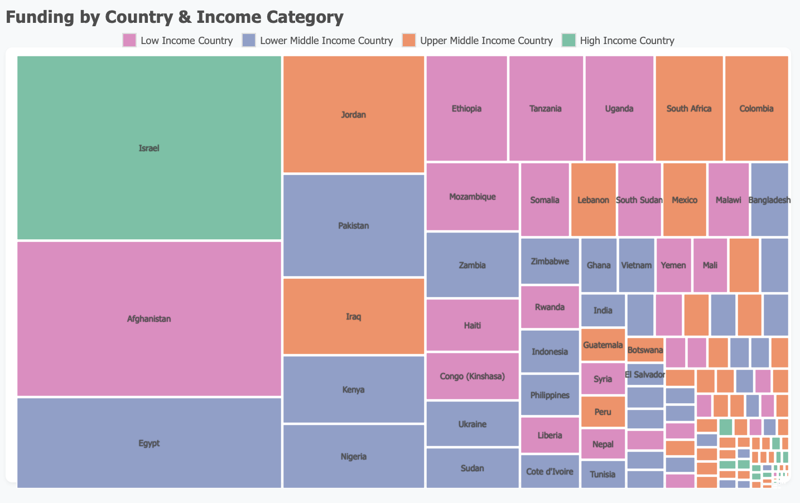
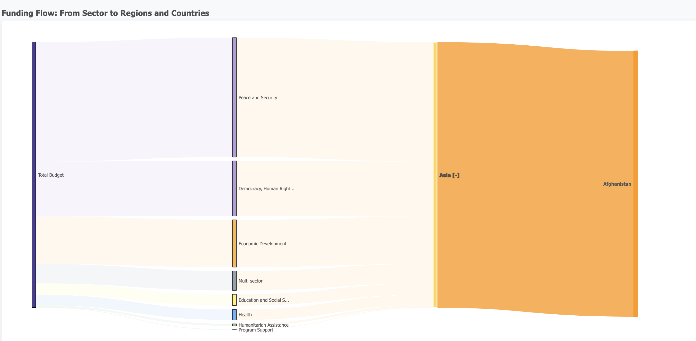
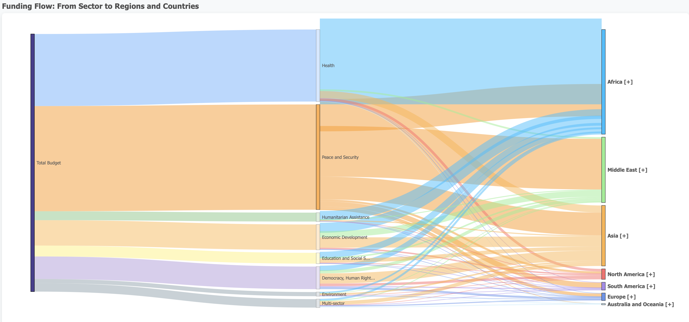
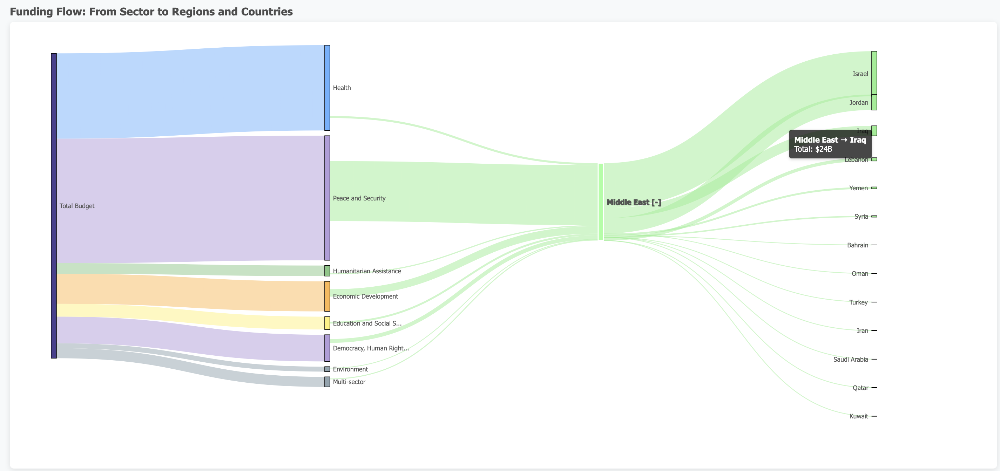
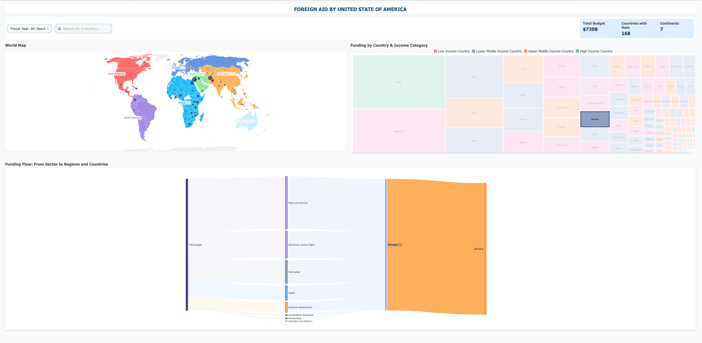

US Foreign Aid Visualization: Project Report
1. Dataset Description
The dataset, US_FOREIGN_BUDGET_COMPLETE, is a comprehensive record of foreign aid provided by the United States to countries around the world. Sourced from US Foreign Assistance, this dataset is publicly available and is regularly updated to reflect the latest allocations. Each row in the dataset represents a unique funding record, capturing the details of aid disbursement for a specific country, fiscal year, and sector.
Key columns include:
- Country Name: The recipient country of the aid, allowing for country-level analysis and comparison.
- Region Name: The geographical region to which the country belongs, enabling regional aggregation and insights.
- Income Group Name: The World Bank income classification (e.g., Low Income, Upper Middle Income), which is crucial for understanding how aid is distributed across different economic strata.
- Fiscal Year: The year the aid was allocated, supporting temporal analysis and trend identification.
- current_amount: The amount of aid (in USD) provided, which is the primary quantitative measure for all visualizations.
- US Category Name: The sector or purpose of the aid (e.g., Health, Economic Development), allowing for sectoral breakdowns and flow analysis.
Data Preprocessing: To ensure the quality and relevance of the analysis, the dataset was cleaned to remove records with missing or zero funding, unspecified countries, or ambiguous income group classifications. Only valid, non-zero funding records with specified countries and income groups are visualized. This preprocessing step is essential for producing accurate and meaningful visualizations.
Limitations: While the dataset is extensive, it may not capture all forms of aid, especially those not reported through official channels. Some countries or regions may have incomplete data for certain years, and the classification of aid categories and income groups may change over time. Users should be aware of these limitations when interpreting the results.
2. Questions the Visualization is Designed to Answer
The visualizations in this project are designed to address a range of analytical questions that are central to understanding the landscape of US foreign aid. By providing both high-level overviews and detailed breakdowns, the dashboard supports a variety of user needs, from policy analysis to academic research.
- How is US foreign aid distributed across different regions and countries? The dashboard enables users to see which regions and countries are the primary recipients of US aid, highlighting geographic disparities and concentrations.
- What are the main sectors (categories) for which aid is provided? By breaking down aid by sector, users can identify the US government's strategic priorities and see which areas (e.g., health, education, economic development) receive the most support.
- How does aid distribution vary by country income group? The inclusion of income group data allows for analysis of whether aid is targeted toward lower-income countries or distributed more broadly.
- What is the flow of funding from sectors to regions and countries? The Sankey diagram and other flow visualizations make it possible to trace the path of aid from its source (sector) through intermediate nodes (regions) to its final destination (countries).
- How do these patterns change over time (by fiscal year)? The dashboard's year filter supports temporal analysis, enabling users to track changes in aid allocation and identify trends or shifts in policy focus.
These questions are relevant for a wide range of stakeholders, including policymakers, researchers, journalists, and the general public. By making the data accessible and interactive, the project aims to foster greater transparency and understanding of US foreign aid.
3. Visualization Design and Evolution
Visualizations Created
The dashboard features a suite of interactive visualizations, each tailored to answer specific analytical questions:
- World Map: This map provides a global overview of aid distribution, with countries shaded or circled based on the amount of funding received. Users can quickly identify hotspots and outliers, and tooltips provide additional context on hover.
- Treemap: The treemap encodes both the amount of funding (via area) and the income group (via color), allowing for rapid comparison across countries and economic classifications. The hierarchical structure makes it easy to spot the largest recipients and see how aid is distributed within and across income groups.
- Sankey Diagram: The Sankey diagram visualizes the flow of funds from the total budget, through major sectors, into regions, and finally to individual countries. This flow-based view is invaluable for understanding the complexity of aid allocation and for tracing the impact of funding decisions.
Design Evolution
The design of the dashboard evolved through several iterations, guided by user feedback and exploratory data analysis. The initial version featured a simple map and bar chart, which provided a basic overview but lacked the depth and flexibility needed for comprehensive analysis. Subsequent versions introduced the treemap and Sankey diagram, which added new dimensions of insight and interactivity.
- Initial Design: The project began with a focus on geographic distribution, using a world map and bar chart to show country-level funding. While informative, this approach was limited in its ability to convey relationships between sectors, regions, and countries.
- Improvements: The bar chart was replaced with a treemap, which makes more efficient use of space and encodes additional information through color and area. The Sankey diagram was added to visualize the flow of funds, providing a holistic view of the aid ecosystem.
- Interactivity: User-driven features such as year filtering, search functionality, and interactive highlighting were incorporated to enhance the user experience and support deeper exploration of the data.
Marks and Channels
- World Map: Uses geographic regions (marks: country shapes), color (channel: region), and tooltips for details. The map is interactive, allowing users to click or hover to see more information and focus on specific countries or regions.
- Treemap: Uses rectangles sized by funding amount (mark: area), color-coded by income group (channel: color). Tooltips and highlights provide detail-on-demand, and the hierarchical layout supports both overview and drill-down analysis.
- Sankey Diagram: Uses nodes (marks: rectangles) and links (marks: paths) to show flow, with width encoding funding amount (channel: size). The diagram is interactive, supporting exploration of specific flows and highlighting of key paths.
- Other Channels: Tooltips, hover highlights, and clickable elements for interaction. Color palettes are chosen for accessibility and clarity, and the layout is responsive to different screen sizes.
Techniques Used
- D3.js: The dashboard is built using D3.js, a powerful JavaScript library for data-driven visualizations. D3 enables flexible, interactive, and highly customizable graphics.
- TopoJSON: TopoJSON is used for efficient map rendering, reducing file size and improving performance compared to standard GeoJSON.
- Data Filtering and Aggregation: All filtering and aggregation are performed client-side, allowing for fast, responsive updates as users interact with the dashboard.
- Color Palettes: Carefully selected color palettes ensure that the visualizations are both aesthetically pleasing and accessible to users with color vision deficiencies.
- Responsive Design: The dashboard layout adapts to different screen sizes and devices, ensuring a consistent user experience across platforms.
4. How the Visualization Answers the Questions
The interactive dashboard is designed to empower users to answer the core analytical questions outlined above. Each visualization plays a specific role in the analytical process, and together they provide a comprehensive view of US foreign aid distribution.
- Aid Distribution by Region/Country: The world map offers an immediate visual overview of where US aid is concentrated. Users can hover over or click on countries to see detailed funding information, and the color coding by region helps to reveal geographic patterns and disparities.
- Main Sectors for Aid: The Sankey diagram's leftmost nodes represent the major sectors receiving US aid. By following the flow of funds, users can see which sectors are prioritized and how resources are allocated across regions and countries.
- Variation by Income Group: The treemap encodes income group by color, making it easy to compare funding across different economic classifications. Users can quickly identify whether low-income or middle-income countries are receiving more aid, and can drill down to individual countries for more detail.
- Funding Flow: The Sankey diagram visually traces the path of funds from sector to region to country, making complex relationships easy to follow. This flow-based view is particularly useful for understanding the impact of policy decisions and identifying bottlenecks or inefficiencies in aid distribution.
- Temporal Analysis: The year filter allows users to see how patterns change over time, supporting trend analysis and the identification of shifts in policy focus or global priorities.
- Search and Focus: The search bar and interactive highlights let users quickly find and focus on specific countries or categories, supporting both overview and detail-on-demand. This feature is especially valuable for researchers or policymakers interested in a particular country or sector.
By combining these visualizations and interactive features, the dashboard provides a flexible and powerful tool for exploring the distribution and impact of US foreign aid. Users can move seamlessly from high-level overviews to detailed, country-specific analyses, making the data accessible and actionable for a wide range of audiences.
Project Visuals

zoomable world map

World Map with regions shaded and countries circled size based on funding amount

Dynamic Sankey Diagram: Trace the journey of US foreign aid from the total budget, through eight key sectors, across seven regions, and down to individual countries.

Income-Based Treemap: Instantly compare countries by income group and funding rank, with color and size revealing economic status and aid received.

Comprehensive Treemap View: Dive deep into the details of each income category and see the distribution of US aid at a glance.

Sector Breakdown: Explore how a single country's funding is distributed across multiple sectors for targeted impact analysis.

Sankey Insights: Instantly spot which sectors and regions are the biggest beneficiaries of US foreign aid flows.

Regional Sector Analysis: Drill down to see how each country within a region receives funding across different sectors.

Country-Focused Dashboard: Instantly reveal a selected country's sector-wise funding profile for a complete, actionable overview.